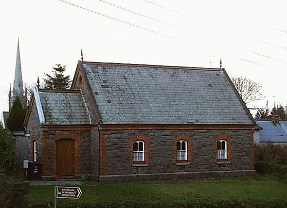

St Mary's Church of Ireland
This church was built in 1807 in the grounds of an ancient Monastery which was founded by the townspeople for mendicant Carmelite friars some years before the Norman invasion. When the town walls were built in the 13th Century, they were extended at this point to enclose the Monastery. It was here, at the southeast corner of the churchyard, that Oliver Cromwell's cannon breached the town wall thus enabling his forces to enter the town in September 1649. Parts of the southeastern walls of the town still stand at the rear of the churchyard.